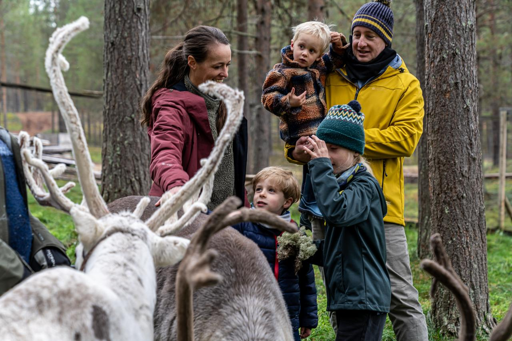
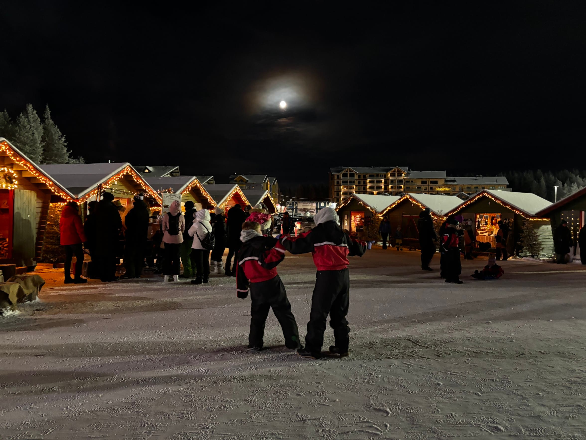

Activities — the honest
verdict on each one

This is the genuine Rovaniemi experience — not the Santa Village. A small family farm 30–45 minutes outside the city, a sleigh ride through forest, feeding the reindeer, coffee and bread in a lávvu. It requires a hire car. It is worth it. The difference between a small local farm and a large tourist-facing operation is enormous — ask about group size before booking.

Same advice as anywhere in Lapland — worth doing once, do it properly, small group. The Rovaniemi area has good operators. Ask for 2+ hours minimum, maximum 12 people in the group. Older children can steer their own sled from around age 5.

Rovaniemi sits at 66.5°N — right on the Arctic Circle — and has good aurora odds from November to March. A guided night aurora hunt by snowmobile, taking you away from city light pollution into the forest, is the best way to chase them. Download the Northern Lights Alert app. Come in January or February for the best odds. Cloud cover is the main obstacle — stay at least 4 nights to give yourself a real chance.